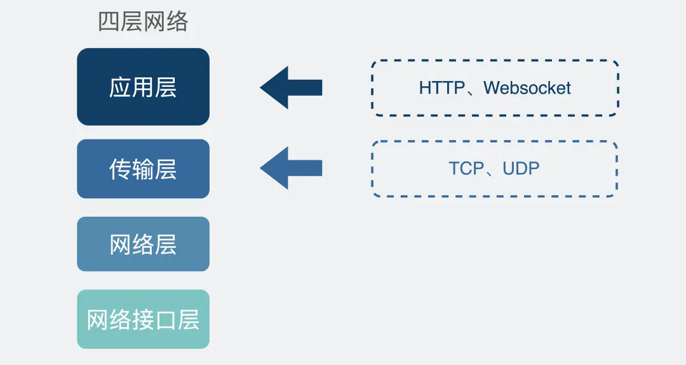
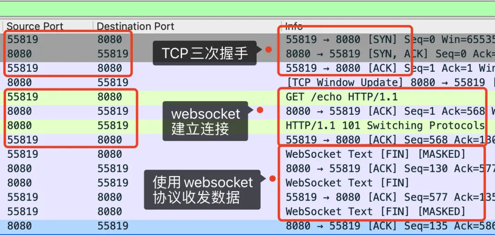

RPC和Websocket作用
一、RPC
思考：既然有HTTP协议了为啥还要RPC呢？
从TCP聊
作为一个程序员，假设我们需要再A电脑的进程发一段数据到B电脑的进程号，我们一般会在代码用Socket进行编程。
这时候，我们可选项一般就TCP和UDP二选一，UDP是不靠谱的（QQ早期大量使用UDP），一般都是选择TCP的。
类似下面这样子：
1fd = socket(AF_INET, SOCK_STREAM, 0);其中，SOCK_STREAM指的就是字节流传输数据，说白了就是TCP协议。
在定义了Socket之后，我们就可以愉快对这个Socket进行操作，比如用bind()绑定IP端口号，用connect()发起连接建立。

在新建立连接之后，我们就可以使用send()发送数据，recv()接收数据。
光这样一个赤裸的TCP连接，会存在一定的问题的：
只使用TCP连接带来的问题
TCP的三个特点：面相连接、可靠、基于字节流。
针对基于字节流这一点儿来说，字节流可以理解成一个双向的通道里流着数据，这个数据其实就是我们常说的二进制数据，简单来说就是一大堆0101的二进制数据。赤裸的TCP收发到这些0101的二进制数据时候是没有任何边界的，所以根本就无法区分到哪个地方才算一条完整的消息。
正式因为这个没有任何边界的特点，我们选择使用TCP发送数据的时候，就没办法得到准确的信息。比如发送“夏洛特烦恼”接收端不知道是夏洛 + 特烦恼 还是 夏洛特 + 烦恼。
这就是所谓的粘包问题，说的这个目的是说，赤裸的TCP是不能直接拿来使用的，要在这个基础上加入一些自定义idea规则，用于区分消息边界。
于是我们会把每条要发送的数据保证下，比如加入消息头，消息头中写清楚一个完整的额包长度是多少，根据这个可以解析接收数据，截取之后他们就知道传输的消息体。
到这我们提到消息头，还可以放各种东西，比如消息体是否被压缩过和消息体格式之类的，只要上下游都约定好就可以互相使用了，这就是所谓的协议。
每个使用TCP的项目都可能定义一套类似这样的协议解析标准，他们可能有区别，但原理都是类似的。
于是基于TCP，就衍生了非常多的协议，比如HTTP和RPC。
HTTP和RPC
TCP是传输层的协议，而基于TCP造出来的HTTP和各类的RPC协议，他们都只是定义了不同的消息格式应用层协议而已。
HTTP协议（Hyper Text Transfer Protocol）超文本传输协议，用的比较多，通过浏览器上桥网址就能访问网页，这里就是HTTP协议。
而RPC（Remote Procedure Call）远程过程调用，本身并不是一个具体的协议，而是一种调用方式，举个例子我们平时调用一个本地放放就像下面这样：
11res = localFunc(req)如果现在这个不是本地方法，而是个远程服务器保留的一个方法remoteFunc，如果我们还能项调用本地方法那样去调用它，就可以屏蔽掉一些网络细节，用起来更方便。
基于这个思路，很多大佬造成非常多的RPC协议，比如gRPC， thrift。
注意，虽然大部分TPC协议底层使用的还是TCP，但实际上他们不一定非得使用TCP也可以改用UDP或者HTTP其实也可以做到类似的功能。
回答思考：为什么有HTTP协议还要有RPC？
其实TCP是70年代出来的协议，而HTTP是90年代才开始流行的，而直接使用赤裸的TCP是会存在问题的，所以中间自定义了很多协议，RPC是80年代出来的。
现在电脑上装的各种联网的软件，客户端都需要跟服务端建立连接来收发消息，此时都会用到应用层的协议，在各种CS架构下，他们可以用自己家造的TPC协议，因为它只管链自己公司就可以了。
但有个软件，浏览器（Browser）是可以访问各种协议的，因此还需要一个统一的标准，不然代价没办法交流，于是HTTP就统一了这种协议。
也就是说，多年前HtTP主要用于BS架构，而RPC更多用于CS架构，但现在身份没有那么区分，额BS和CS架构慢慢融合了。很多软件会同时支持多端，比如云盘，要支持网页版还要支持手机版和客户端，如果通信协议都用HTTP的话，服务器只要用一套就可以了，而RPC就开始退居幕后了，一般用于公司内部集群里边，各种微服务之间的通讯。
HTTP和RPC区别
服务发现
首先向某个服务器发送请求你就可以建立连接，建立连接的前提是知道IP地址和端口，找到这个服务区对应的IP端口的过程就是服务发现。
在HTTP中，要知道服务的域名，就可以通过DNS服务去解析得到背后的IP地址默认是80端口。
在RPC中，就有些区别了，一般会有专门的中间服务器去保存服务名和IP信息，比如Consul'或者Etcd甚至是Redis想要访问某个服务，就可以去这些中间服务器去获取IP和端口信息。由于DNS也是服务发现的一种，所以也有甚至用过DNS去做服务发现的额组件，比如CoreDNS。
可以看到服务发现这一块，两者有些区别但是不大。
底层连接形式
以主流的HTTP/1.1协议来说，其默认是在建立在TCP连接之后一直保存这个链接（KeepAlive）之后的额请求与响应都会服用这条连接。
而RPC协议，根HTTP类似，也是通过建立TCP长链接进行数据交互，但不同的地方在于，TCP协议一般还会再创建个连接池，在请求量大的时候建立多条连接池放在池子中，要发送数据的时候就从池子里取一条连接出来，用完在放回去，可以说非常环保。

由于连接池有利于提升网络请求性能，所以不少变成语言网络库里面都加个HTTP连接池。
两者区别也不大。
传输的内容
基于TCP传输的消息，说到底，无非都是消息头Header和消息体Body。
Header是用于标记一些特殊标记信息，其中最重要的就是消息体长度。
Body则是放我们真正需要传输的内容，而这些内容智能是二进制01串，毕竟计算机只认识二进制数据，所以TCP穿越字符串和数字都问题不大，因为字符串可以转成编码在变成01串，而数字本身就能直接转换成二进制，但结构体呢，我们像个办法将它也转换成二进制，这样的方案有很多线程的比如Json、Protobuf。
这个结构体转换为二进制的过程就是序列化，将二进制转换成原始的结构体就叫反序列化。
对于助理的HTTP/1.1虽然叫做超文本传输协议，支持音频视频，但HTTP设计者起初是为了做网页文本的展示所以传的内容都是以字符为主。Header和Body都是如此，它使用JSON来序列化结构体数据。
如上图所示就是一个HTTP请求的Header和Body，可以看到里面的内容有很多冗余，最明显的是Header里的信息，其实如果我们约定好头部的第几位是Content-Type的话，就不需要每次把Content-Type字段都传过来，类似的情况再body中的Json结构中也特别明显。
而RPC因为它定制化程度更高，所以可以采用体积更小的Protobuf或其他序列化方式来保存结构化的数据，同时也不需要像其他HTTP请求那样考虑各种浏览器的行为，比如302重定向跳转啥的，因为性能会更好一点，在写在公司内部的未付中会抛弃HTTP，选择使用RPC最主要的原因。
当然上面说的HTTP，其实特指的是主流使用的HTTP/1.1针对HTTP/2在亲着的基础上做了很多改进，性能比很多RPC协议还要好，甚至连gRPC底层都直接使用的HTTP/2协议。
总结
赤裸的TCP能收发消息，但是它是个无边界的数据流，上层需要定义消息格式用于定义消息编辑。于是就有了各种协议，HTTP和各种的TCP之间定义的应用层协议。
RPC本质上不算是协议，而是一种调用方是，像gRPC和Thrift才是具体的实现才算是协议，他们是实现了RPC调用的协议。目的是希望程序员能像调用本地放放那样去调用远程的服务方法。同时RPC有很多种实现方式，不一定非得基于TCP协议。
从发展的历史来说，HTTP协议主要用于BS架构，而RPC主要用于CS架构，但现在已经没有那么清楚的界限了。BS和CS子慢慢融合，很多软件出现了支持多端的例子，堆外一般用的都是HTTP协议，而内部集群之间使用的RPC协议进行通讯。
RPC其实比HTTP出现的更早，且比目前主流的HTTP/1.1性能更改所以大部分公司内部使用的还是RPC。
HTTP/2在HTTP/1.1的基础上做了优化，性能可能比很多RPC协议都要好，单由于是这几年才出来得所以不太能替代掉RPC。
二、Websocket
从HTTP协议的角度来说，点一个网页上的某个按钮，前端发一次HTTP请求，网站返回一次HTTP响应，这种由由客户端主动请求，服务器响应的方式也能满足大部分网页功能的场景。
但是，如果服务器端要主动给客户端推送消息，就不好实现。
使用HTTP不断轮询
其实问题在于怎么养活才能用户不做任何操作的情况下，网页能收到消息并发生变更。
最常见的解决防范是网页的前端代码里定时不断大的发送HTTP请求，服务器收到请求后给客户端响应消息。
这其实是一种伪服务器推的形式。
它其实并不是服务器主动发消息的客户端，而是客户段不断轮训对于用户来说无感知而已，用这种方式的场景也有很多，最常见的就是扫码登录。
比如，微信的公众号平台需要登录二维码，前端页面根本不知道用户扫没扫，于是不断地去后端服务区询问，每秒都会请求一次，这样可以保证用户扫码后再1到2秒内得到及时的反馈不至于等太久。
使用HTTP定时轮训有两个比较明显的问题：
当你打开浏览器的控制台的时候，会发现满屏的HTTP请求，随人很小，但其实也非常消耗贷款的，同时也会增加下游服务器的负担。
最坏的情况下用户在扫码之后，等1-2秒，正好触发下一次HTTP请求，然后跳转到页面，用户会感到明显的卡顿。
使用体验就是二维码扫完之后需要卡顿1-2秒才能进行跳转。
长轮训
HTTP请求发出去之后，一般会给服务器留一定的时间做响应，比如3秒，规定时间内没有返回的话就认为是超时。
如果我们的HTTP请求将超时设置很大，比如30秒，在这30秒内只要服务器收到了扫码的请求，就立即返回给客户端网页，如果超时了，就立马发起下一次请求。
这样就可以减少HTTP请求的个数，并且大部分情况下用户都会在30秒内完成扫码的动作所以响应的也很及时。

比如，百度云盘就是这么干的，扫描手机上点确认电脑端立即秒跳转，体验就很好。
像这种发起一个请求，在较长的时间内等待服务器响应的机制就是所谓的长轮询机制。
我们常用的消息队列比如RocketMQ消费者去拉取数据段时候用的就是这种方式。
像这种由于用户感知不到的情况下，服务区将数据推送给浏览器的技术，就是所谓的服务器推送技术，它还有个好不沾边的英文名 comet技术。
轮询还是长轮询本质上都是客户段主动取数据，对于扫码简单的场景还可以使用但是对于网络游戏这种的很显然不能满足。
Websocket定义
我们知道TCP连接的两端，同一时间ei双方都可以主动向对方发送数据的这就是全双工。
使用最广泛的HTTP/1.1也是基于TCP协议的，同一时间内，客户端和服务器智能有一方主动发送数据，这里就是半双工。
为啥HTTP/1.1中要使用半双工呢？
由于HTTP协议设计之初，就是考虑到时网页上的文本的场景，能做到客户端发起请求到服务器端响应就够了，根本就没考虑到网页游戏这种的，客户段和服务端之间互相主动发送大量的使用场景。
所以为了更号的支持这种尝尽个，需要基于TCP的新你的协议：websocket协议。

怎么建立Websocket连接呢
我们平时刷网页的时候，一般都是在网页上刷的一会儿刷图文消息，这时候使用的是HTTP协议，一会打开网页游戏，这个时候使用的就是Websocket协议。
为了兼容这些使用场景。浏览器在TCPs握手建立之后，都同一使用HTTP协议进行一次通信。
如果此时使用的是HTTP请求，那么后续顺访还是老样子继续使用普通的HTTP协议进行交互。
如果想要建立Websocket连接，就会在HTTP请求里带上一些特殊的header头，如下：
31Connect: Upgrade2Upgrade:WebSocket3Sec-WebSocket-Key: T2a6wZlAwhgQNqruZ2YUyg==\r\n这些header的意思是浏览器想升级协议（Connection: Upgrade），并且想升级成WebSocket协议（Upgrade: WebSocket）同时带上一段随机生成的base64码（Sec-WebSocket-Key）发给服务器。
如果服务器正好支持支持升级WebSocket协议。就会走WebSocket握手流程，同时根据客户端生成的base64码，用某个公开的算法变成另一端字符串，放在HTTP响应的Sec-WebSocket-Accept头里，同时带上101状态码，发挥给浏览器。HTTP响应如下：
41HTTP/1.1 101 Switching Protocols\r\n2HTTP/1.1 101 Switching Protocols\r\n3Upgrade: WebSocket\r\n4Connection: Upgrade\r\nHTTP状态码200代表的是正常响应，101确实不常见，它其实是指协议切换。
之后，浏览器也用同样的公开算法将base64转成另一端字符串，如果这段字符串跟服务器传回来的字符串一致，那么验证通过。
就这样经历了一来一回两次HTTP我好多，Websocket建立完成，后续双方就可以使用Websocket进行通信了。

WebSocket抓包
我们可以用wireshark抓包看下数据包的情况：
上面这个图中红框起来的是2445行报文，是WebSocket第一次握手，意思是发起了一次带有特殊Header的HTTP请求。
上面这个图中洪荒的4714行报文，就是服务器在得到一次握手之后相应的额第二次握手，可以看到也是这个HTTP类型的报文，返回的状态是101，同时可以开电脑报文返回的header中也带有个zhongWebsocket相关的信息，比如sec-Websocket-Accept。

上面这张图中，从截图上的注释可以看出，WebSocket和HTTP一样都是基于TCP的协议。经历了三次TCP握手之后，利用HTTP协议升级为Websocket协议。
WebSocket消息格式
数据包在WebSocket中被叫做帧，我们来看下它的数据格式是什么样子的？
这里的字段很多，我们只需要关注几个：
opcode字段：这个用来标志 这是个什么类型的数据帧：
1：带包是text（String）的数据包。
2：二进制数据类型（byte[]）的数据报。
8：关闭连接的信号。
payload字段：存放我们真正要传输的数据的长度，单位是字节，比如要发送的数据是字符串”111“，它的长度是3。
我们存放payload长度的字段有好几个，既可以使用最前面的7bit，也可以用侯建的7——16bit或7+64bit。在数据层面，大家都知道01二进制流，我们知道什么情况下应该7bit什么情况下毒7+16bit呢？
WebSocket会最开始的7bit做标志位，不管接下来的数据有多大，都会先读最先的7个bit，根据它的取值决定要不要读16bit或64bit。
如果最开始的7bit的值是0~125，那么就表示payload全部长度，只读最开始的7个bit就完事了。
如果是126（0X7E）。那它表示payload的长度范围在126~65535之间，接下来还需要再读16bit。这16bit会包含payload的真实长度。
如果是127（0X7F）。那么它表示payload的长度范围>=655436，接下来还需要再读64bit。这64bit会包含payload的长度。这能放2的64次方的byte的数据换算好多tb肯定够用了。
payload data字段：这里存放的就是真正要传输的数据，在知道了上面的payload长度后，就可以根据这个值去截取对应的数据。
WebSocket数据格式也是包含数据通（内容包含payload长度） + payload data的形式。
这里是因为TCP协议本身就是全双工的，但直接使用赤裸的TCP去传输数据的时候会有战报的问题，为了解决这个问题，上层协议一般会用消息头+消息体的格式去重新包装要发送的数据。
而消息头里面一般包含的消息体的长度，通过这个长度可以取截取真正的消息体。
HTTP协议和大部分RPC协议，以及WebSocket系诶都是这么设计的。
WebSocket使用场景
WebSocket完美继承了TCP协议的全双工的能力，并且还贴心的解决了战报的方案。
适用于服务端和客户端频繁交互，比如网页小程序游戏、网页聊天室，以及一些类似飞书的网易协同办公软件。
总结
TCP协议本身是全双工的，我们最常用的是HTTP/1.1虽然是基于TCP协议的，但它是半双工的，对于大部分需要服务器主动推送数据到客户端的场景，不太友好，我们需要支持全双工的WebSocket协议。
在HTTP/1.1中只要客户端不问，服务端就不答，基于这样的特点，对于登录页面的简单场景可以使用定时轮询或者长轮询的方式实现服务器主动推送（comet）的效果。
对于客户端和服务端之间需要频繁的复杂场景，比如网页游戏，都可以考虑使用WebSocket协议。
WebSocket和sokcet没有任何关联。
因为各个浏览器都支持HTTP协议，所以WebSocket协议会利用HTTP协议加上一些特殊的Header头进行握手升级操作，升级成功后跟HTTP没有任何关系了，之后就用WebSocket的数据格式进行收发数据。